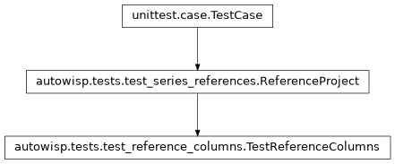

autowisp.tests.test_reference_columns module
Class Inheritance Diagram

Tests for the series table over magfit diagnostics.
A diagnostic fit_magnitudes produces is read in a photometric reference
and a photometry as well as a channel, so the table chooses all three: the
reference with the channel, in the channel columns, and the photometry in
columns of its own. These need the night of test_series_references,
fit against two references and recorded in two apertures, rather than the
fixture of test_channel_binding, which records neither.
Django is configured here because what a rebinding answers includes the row’s cells as rendered HTML, and rendering them needs the template engine.
- class autowisp.tests.test_reference_columns.TestReferenceColumns(methodName='runTest')[source]
Bases:
ReferenceProject
The table over magfit diagnostics: references and photometries chosen in its columns.
On the night of
autowisp.tests.test_series_references, fit against two references in each of two channels, with one frame bound differently in the two and one bound to nothing, and the offsets recorded in two apertures, one of them missing a frame in R.- test_a_magfit_column_offers_its_references()[source]
Each (channel, photref) the night’s frames are bound to.
What each is called, and how many frames it draws, are for the page and for the counting tests respectively.
- test_a_quoted_magfit_read_gets_a_column_of_its_own()[source]
After the slot’s, offering only the quoted channel’s references.
- test_a_rebound_row_counts_the_frames_of_its_binding()[source]
Those fit against both references, as the series will draw, and recording the offset in the photometry bound: in aperture 2, one of them does not in R.
- test_a_row_is_drawn_from_its_references()[source]
Its tail column posted too, and only the frames fit against both.
Here the one frame fit against ref2 in R but ref1 in B. A click on a point opens it in the row’s channel, R, not in
R|….
- test_each_photometry_parameter_gets_a_column()[source]
However the photometries are reached: a diagnostic takes one, an expression one per photometry parameter, and a quoted photometry none. Each column offers both of the night’s apertures.
- test_two_photometries_of_one_channel_are_compared()[source]
Each read in the photometry its column binds.
Aperture 2 against aperture 0 differs by their shift throughout, but on the frame aperture 2 did not record in R, where it is undefined. A row beside it posting one photometry for two columns names no binding, and is not drawn.